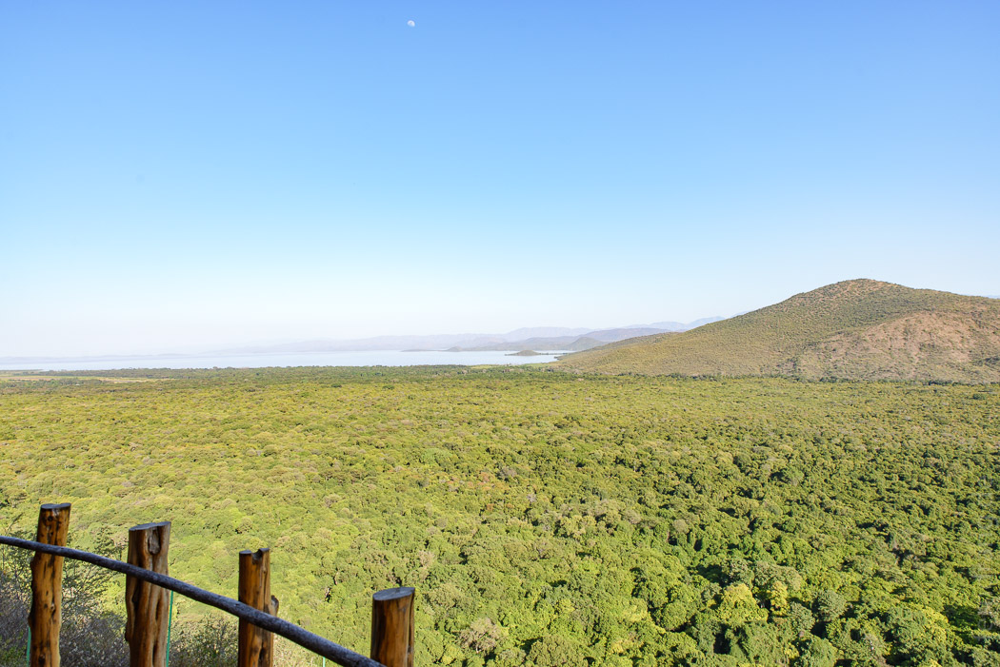
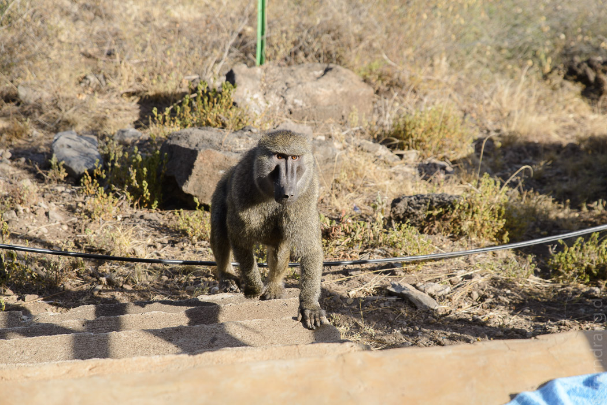
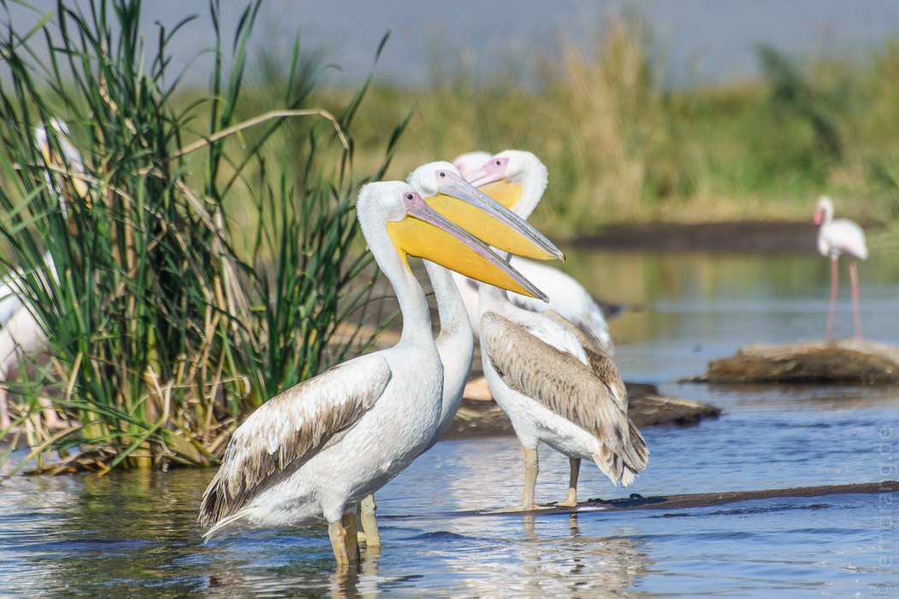
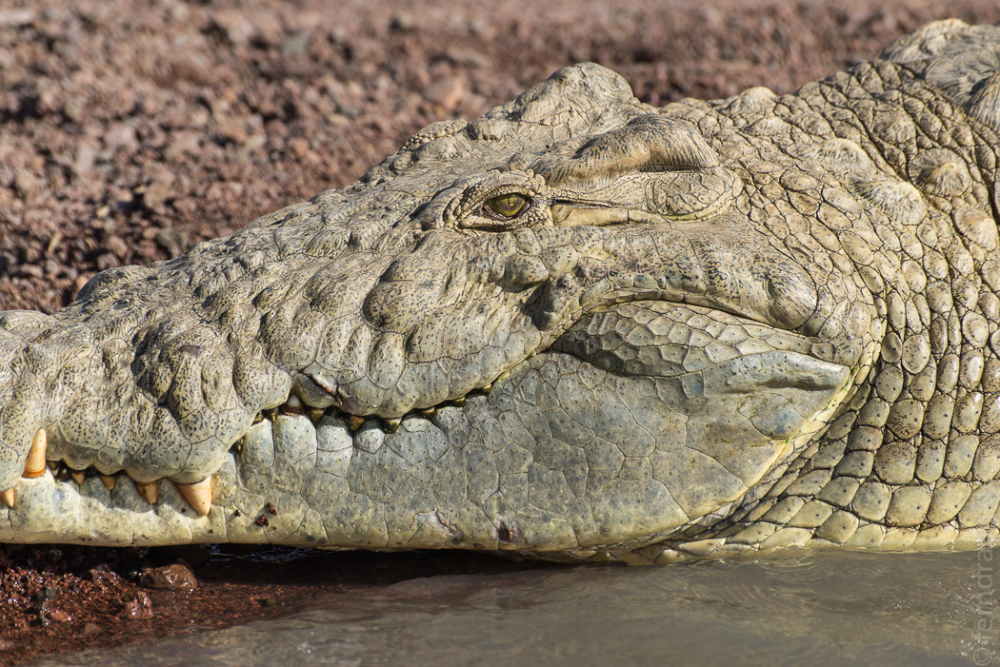
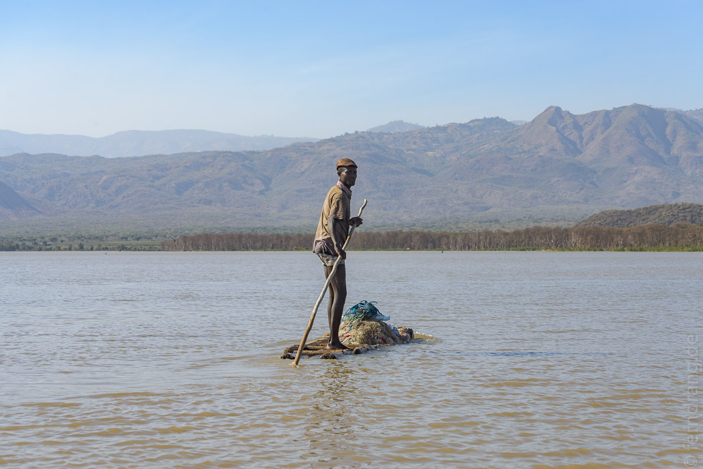
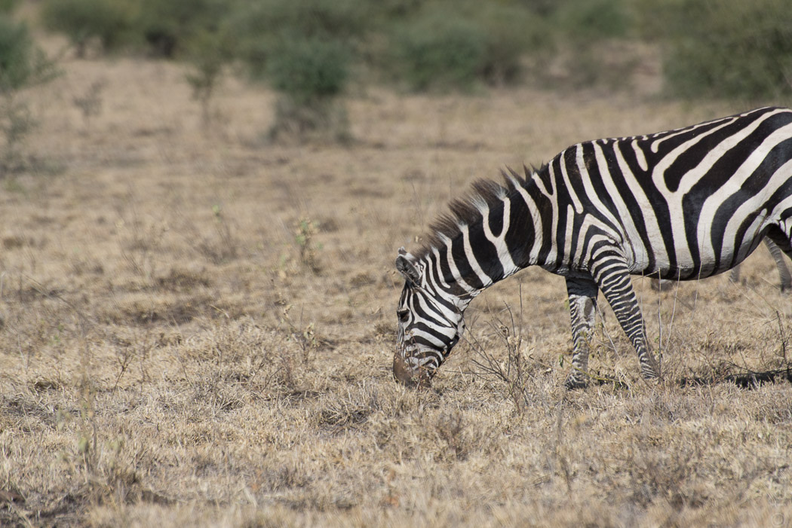
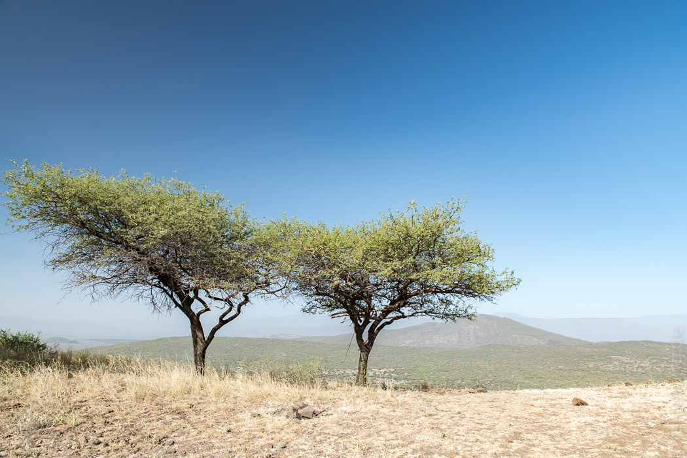

Nach den vielen anstrengenden Unternehmungen haben wir uns für die letzten Tage etwas Entspanntes ausgesucht. Mit dem Flugzeug konnten wir stressfrei die Riesenstrecke in den Süden überspringen. Wer weiß, wie viele Tage das im Bus gewesen wären.
Arba Minch ist ein schäbiges Kaff ohne eine einzige Sehenswürdigkeit. Nur die Lage ist interessant. Es liegt auf einem kleinen Plateau über zwei großen Seen, ein blauer und ein brauner, die von einer bergigen Landbrücke getrennt sind, die großspurig "God's Bridge" genannt wird. In der "Paradise Lodge" haben wir einen hübschen kleinen Bungalow direkt an der steilen Kante und nichts stört den Blick auf den Nationalpark Nichisar, der zu unseren Füßen beginnt. Wir genießen das Nichtstun und beobachten die Marabus und Raben, die nur wenige Meter vor unserer Terrasse vorbeisegeln und sich um jede Beute streiten. Abends schallt aus dem dichten Brokkoli-Wald das wilde Geschrei von Affenbanden herauf. Und manchmal schleicht sich auch ein großer Pavian durch ein Loch im Zaun, um den Mangobaum hinter unserer Hütte zu plündern.
 Auf dem (blauen) Lake Chamo kann man eine Bootsfahrt unternehmen. Das Ufer ist hübsch von Schilf und Papyrus gesäumt und außer ein paar Fischern, die auf kleinen Flößen stehend paddeln, ist auf dem Wasser nicht viel los. Eine Lagune ist bei weißen Pelikanen sehr beliebt, die sich hier zu Dutzenden treffen. Zwischen die tollen Vögel hat sich ein staksiger Flamingo gemischt. Unsere italienische Mitfahrerin drängt zur Weiterfahrt, weil es hier nicht um Vögel sondern um Krokodile gehen soll. Auf diese Biester treffen wir später in einem anderen Winkel, nachdem wir an einer Hippo-Familie vorbeigekommen sind, die uns nicht viel mehr als Nüstern und rotierende Ohren zeigt. Die riesigen Krokodile sind mit ihren fünf Metern Länge ziemlich respekteinflößend, auch wenn sie dasselbe anscheinend von unserem Boot denken.
  Ein zweiter Ausflug führt uns in den Nationalpark. Danakil-erprobt kann uns die holprige Piste nichts anhaben. In wildem Zickzack durchqueren wir God's Bridge und genießen die Aussicht mal auf den einen mal auf den anderen See. Im flachen Teil stehen die hohen Bäume, die wir von unserer Terrasse aus sehen, mit geschlossenen Kronen und lichtem Unterholz. Hier treiben sich Affen herum und sonst nicht viel. Nach wildem Auf und Ab gelangen wir hinter den Berg, der uns von oben die Sicht versperrt. Hier öffnet sich eine kleine Savannenlandschaft mit Schirmakazien, Zebras und Gazellen in allen Größen. Räuber scheint es in diesem Paradis nicht zu geben.
 